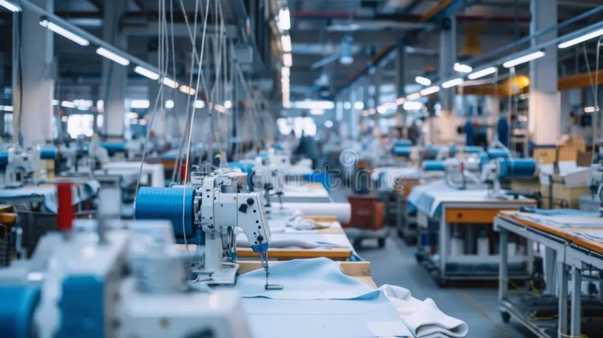

Services
PT Hop Lun Indonesia menyediakan berbagai layanan produksi garmen berkualitas tinggi, mulai dari pengembangan desain, pemilihan material, proses pemotongan kain, penjahitan, hingga finishing dan quality control. Dengan dukungan teknologi modern dan tenaga kerja profesional, kami memastikan setiap produk memenuhi standar kualitas internasional. Kami berkomitmen untuk memberikan hasil terbaik, efisien, dan tepat waktu demi memenuhi kebutuhan pelanggan global.

Garment Production
Layanan produksi garmen yang lengkap dengan teknologi modern dan proses kerja yang terstandarisasi untuk menghasilkan produk berkualitas tinggi sesuai kebutuhan pasar global.

Production Management
Pengelolaan proses produksi garmen menggunakan teknologi modern dan sistem kerja yang efisien untuk memastikan kualitas produk tetap terjaga.

Garment Manufacturing
Proses produksi pakaian yang terintegrasi mulai dari pemotongan kain, penjahitan, hingga finishing dengan standar kualitas tinggi.

Product Development
Pengembangan produk garmen mulai dari konsep desain, pemilihan bahan, hingga pembuatan sampel sebelum masuk ke proses produksi.

Production Support
Dukungan produksi yang memastikan setiap proses berjalan lancar dengan pengawasan yang ketat dan koordinasi tim yang baik.

Fabric Testing
Pengujian kualitas kain untuk memastikan bahan memenuhi standar produksi dan ketahanan sebelum digunakan dalam proses pembuatan pakaian.